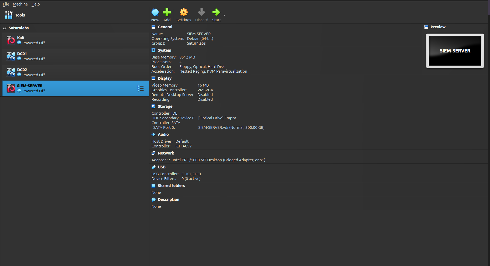

Linux is a family of open-source Unix-like operating systems based on the Linux kernel, first released on September 17, 1991, by Linus Torvalds. Linux is typically packaged in a Linux distribution.
Why Should I Use Linux?
Linux is an excellent operating system for developers. It is free and open-source, allowing users to modify and redistribute the source code. Linux is also more secure than other operating systems, making it a great choice for those concerned about privacy and security.
Popular Linux Distributions
| Distribution | Package Manager | Best For |
|---|---|---|
| Ubuntu | APT (Debian-based) | Beginners, Developers |
| Debian | APT | Servers, Stability |
| Arch Linux | Pacman | Advanced Users |
| Fedora | DNF | Cutting Edge Software |
| CentOS | YUM | Enterprise, Servers |
Getting Started with Linux
If you're new to Linux, start by installing a Linux distribution. Ubuntu is an excellent choice for beginners as it is easy to install and use. You can also try running Linux in a virtual machine before installing it on your system.
Let's Get Started!
First, download a Linux distribution. We will use Ubuntu for this tutorial. You can download it from the official website:
Download UbuntuAfter downloading the Ubuntu ISO file, follow the instructions to create a bootable USB drive or use VirtualBox (which we will set up in this tutorial).
Setting Up VirtualBox
VirtualBox is a free and open-source virtualization software that allows you to run multiple operating systems on a single machine. You can download VirtualBox from the official website:
Download VirtualBoxAfter downloading VirtualBox, follow the instructions to install it on your system. Once installed, open VirtualBox and click on the "New" button to create a new virtual machine.
